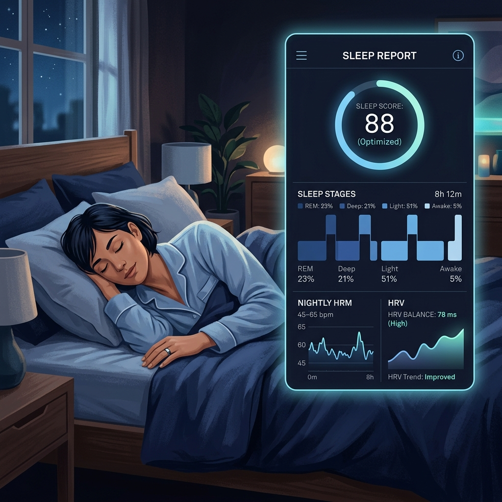
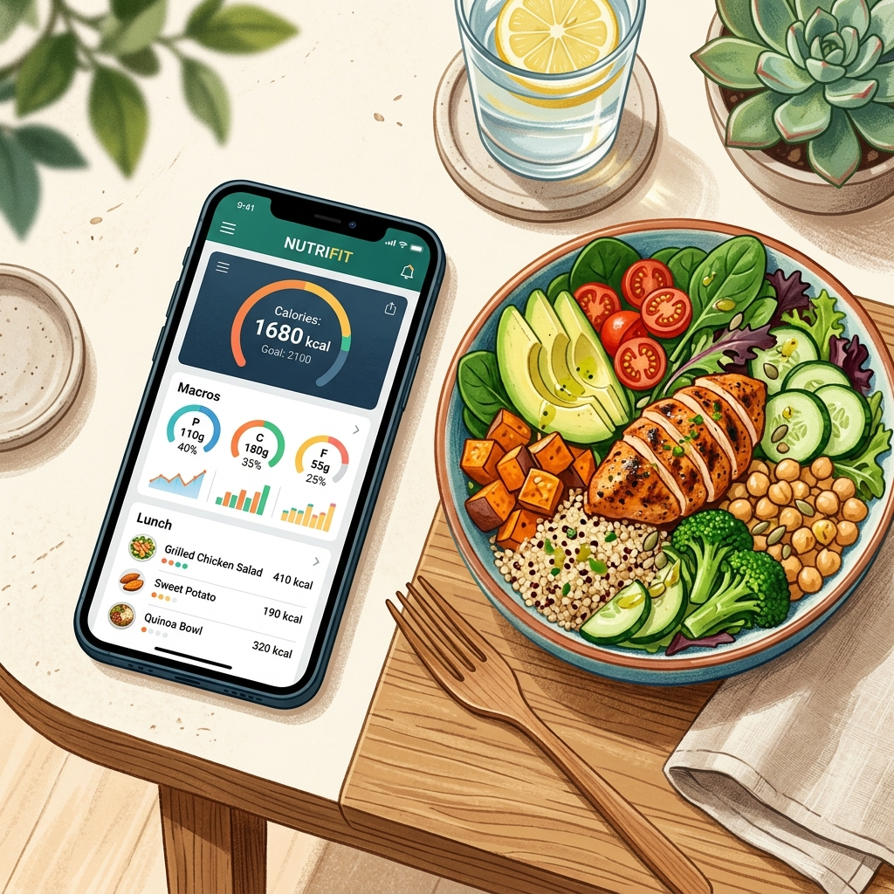

What Is Biohacking?
Biohacking is the practice of making deliberate, science-informed changes to your diet, lifestyle, environment, and daily habits to improve how your body and mind function. Unlike traditional health advice that focuses on avoiding illness, biohacking takes an offensive approach: the goal is not just to be healthy, but to perform at the highest possible level.
The term was popularized in the early 2010s by figures like Dave Asprey and Tim Ferriss, but the underlying practices draw from decades of research in sports science, chronobiology, neuroscience, and nutritional medicine. In 2026, biohacking has entered the mainstream. Professional athletes, executives, entrepreneurs, students, and everyday people are all using these techniques to gain a competitive edge.
It is important to clarify what biohacking is not. It is not about extreme genetic experiments, implanting chips under your skin, or taking dangerous unproven compounds. The most effective biohacking interventions are entirely legal, largely free, and supported by robust scientific evidence. They involve optimizing the basic biological systems your body already relies on: sleep, nutrition, movement, stress management, and environmental inputs.
Why Biohacking Has Become So Popular
Modern life is fundamentally misaligned with human biology. We evolved to wake with the sunrise, sleep in darkness, eat whole foods, move frequently, and experience natural temperature variation. Instead, most people spend their days under artificial lighting, sitting in chairs, eating ultra-processed foods, staring at screens until late at night, and managing chronic psychological stress.
The cumulative biological cost of this mismatch is significant. Sleep disorders, obesity, anxiety, chronic fatigue, metabolic dysfunction, and inflammatory conditions have all increased dramatically over the past five decades. Biohacking is, in part, a systematic attempt to re-align modern living with biological needs using data and deliberate intervention.
The other driver of biohacking's growth is the democratization of measurement. Consumer-grade wearable devices now allow individuals to track their heart rate variability, sleep architecture, blood oxygen, skin temperature, and even blood glucose continuously. This data makes it possible to observe how specific lifestyle choices affect physiology in real time — turning health from guesswork into a feedback-driven science.
1. Sleep Optimization: The Most Powerful Biohack of All
If you could do only one thing to improve your physical and mental performance, it would be to sleep better. Sleep is when the body performs the majority of its repair and restoration work. Growth hormone secretion peaks during slow-wave sleep. Memories are consolidated during REM sleep. The glymphatic system — the brain's waste clearance mechanism — operates primarily during sleep, flushing out metabolic waste products including the amyloid plaques associated with Alzheimer's disease.
The majority of adults in developed countries are chronically sleep-deprived, typically sleeping between six and six and a half hours per night when most need between seven and nine. The consequences of this deficit are profound and underappreciated. Even one week of sleeping six hours per night produces cognitive impairments equivalent to twenty-four hours of total sleep deprivation.

The Science of Sleep Architecture
Sleep is not a uniform state. It cycles through four stages approximately four to six times per night, with each cycle lasting around 90 minutes. Stages 1 and 2 are light sleep, used primarily for transition and light restoration. Stage 3, known as slow-wave or deep sleep, is where the majority of physical repair occurs. REM (Rapid Eye Movement) sleep handles emotional processing, learning, and memory consolidation.
The distribution of sleep stages across the night is not random. Deep sleep predominates in the first half of the night, while REM sleep is more concentrated in the second half. This means that even slightly truncating your sleep — setting an alarm an hour earlier than your natural wake time — disproportionately cuts into REM sleep, with significant consequences for mood, memory, and emotional regulation.
Practical Sleep Optimization Techniques
- Temperature: The bedroom should be between 65–68°F (18–20°C). Core body temperature must drop by approximately 1–2°F to initiate and maintain sleep. A cool room dramatically accelerates this process.
- Light blocking: Complete darkness is the goal. Even small amounts of light penetrating closed eyelids can suppress melatonin secretion. Blackout curtains or a high-quality sleep mask are essential tools.
- Blue light avoidance: Blue-wavelength light from screens suppresses melatonin secretion. Avoid screens for 90 minutes before bed, or use blue-light-blocking glasses if screen use is unavoidable.
- Consistent sleep timing: Going to sleep and waking at the same time every day — including weekends — is the single most effective intervention for improving sleep quality. Irregular schedules fragment sleep architecture.
- Wind-down routine: The nervous system needs time to transition from alert to restful states. A 30–60 minute pre-sleep routine involving low stimulation activities (reading, light stretching, journaling) signals to the body that sleep is approaching.
Key Insight: Most people would see greater performance improvements from sleeping one extra hour per night than from any supplement, training programme, or productivity system. Sleep is the master variable that amplifies or undermines everything else.
2. Nutrition & Glucose Management
Nutrition science has advanced significantly in the past decade, and one of the most important insights to emerge is the central role of blood glucose regulation in energy, mood, cognitive performance, and long-term metabolic health. Most people experience multiple blood glucose spikes and crashes throughout the day without ever realizing it, and these fluctuations have profound effects on how they feel and perform.
When you eat foods that cause rapid blood glucose elevation — refined carbohydrates, sugary drinks, ultra-processed snacks — your pancreas releases a large surge of insulin to bring glucose back down. In many cases, particularly after a very high-carbohydrate meal, insulin overshoots, driving blood glucose below the baseline. This post-meal glucose crash is experienced as fatigue, brain fog, irritability, and hunger — often within two to three hours of eating.

Continuous Glucose Monitors (CGMs)
Continuous glucose monitors were originally developed for people with diabetes, but they have become one of the most powerful biohacking tools available for non-diabetic individuals. A CGM is a small sensor inserted just under the skin of the upper arm that measures interstitial glucose (a reliable proxy for blood glucose) every few minutes and transmits the data to a smartphone app.
The insights that CGM users consistently report are illuminating. Foods they assumed were healthy — fruit smoothies, whole grain bread, oat porridge — often produce dramatic glucose spikes. Conversely, the same foods consumed in different orders or combinations can produce dramatically different glucose responses. Eating protein and vegetables before carbohydrates, for example, consistently reduces post-meal glucose peaks by 20–30% in controlled studies.
Evidence-Based Nutritional Strategies
- Eat vegetables before carbohydrates: Starting a meal with fibre slows gastric emptying and flattens the subsequent glucose response to any carbohydrates consumed.
- Prioritize protein at breakfast: A high-protein breakfast stabilizes blood glucose for the first half of the day and reduces overall calorie intake through improved satiety signalling.
- Time-Restricted Eating (TRE): Compressing your eating window to 8–10 hours allows insulin levels to fall for extended periods, promoting fat oxidation and metabolic flexibility. Even a simple 16:8 approach (16 hours fasting, 8 hours eating) has documented benefits for body composition and metabolic health.
- Apple cider vinegar before meals: The acetic acid in apple cider vinegar inhibits certain digestive enzymes, slowing glucose absorption. A tablespoon diluted in water before a high-carbohydrate meal reduces post-meal glucose spikes by up to 20%.
- Post-meal walks: Even a 10-minute walk after eating significantly accelerates glucose clearance from the bloodstream by activating muscle glucose transporters independently of insulin.
3. Cold Therapy & Heat Exposure
Deliberate temperature exposure — both cold and heat — represents one of the most accessible and well-researched biohacking interventions available. Both extremes activate powerful adaptive biological responses that improve physical performance, metabolic health, and psychological resilience.
Cold Therapy: The Science Behind the Discomfort
Cold exposure activates the sympathetic nervous system, triggering a cascade of physiological responses. Norepinephrine levels increase by up to 300% within minutes of cold immersion, producing improvements in mood, focus, and alertness that can last for several hours. This norepinephrine surge is one reason that many cold therapy practitioners report that a cold shower first thing in the morning produces better mental clarity than a cup of coffee.
Research from Dr. Andrew Huberman at Stanford and others has documented that cold water immersion (typically 50–59°F or 10–15°C for two to ten minutes) also significantly increases dopamine levels — by up to 250% — with effects that are more sustained than those produced by most other legal stimulants. Unlike the sharp dopamine spike followed by a crash that characterizes stimulant drugs, the dopamine elevation from cold therapy is gradual and sustained over several hours.
For physical recovery, cold water immersion reduces muscle inflammation and speeds recovery between training sessions. However, it is worth noting that using cold immersion immediately after strength training may partially blunt the adaptive response to resistance training. Most sports scientists now recommend avoiding cold immersion for two to four hours post-strength session while continuing to use it freely after cardiovascular training.
Heat Therapy: Saunas and Long-Term Health
Regular sauna use has been associated with some of the most compelling long-term health outcomes in biohacking research. A landmark Finnish study following over 2,300 men for twenty years found that those who used a sauna four to seven times per week had a 40% lower risk of all-cause mortality and a 50% lower risk of cardiovascular disease death compared to once-weekly sauna users. These are effect sizes that rival pharmaceutical interventions.
The mechanisms are multiple. Heat stress triggers the release of heat shock proteins, which repair damaged cellular proteins and improve cellular resilience. The cardiovascular response to sauna mimics moderate-intensity exercise, providing a training stimulus for the heart and blood vessels. Growth hormone secretion also increases significantly during and after sauna sessions, supporting tissue repair and body composition.
Beginner Protocol: Start with a 30-second cold shower at the end of your normal warm shower. Gradually extend to 2–3 minutes over several weeks. For heat, even a weekly sauna session at 80°C for 15–20 minutes produces measurable cardiovascular benefits.
4. Light & Circadian Rhythm Management
Light is the most powerful environmental signal regulating your circadian rhythm — the internal biological clock that governs sleep timing, hormone secretion, metabolism, immune function, and dozens of other physiological processes. Understanding how to use light strategically is one of the highest-leverage biohacks available, and it costs nothing.
Morning Sunlight: The Master Reset
Getting exposure to bright natural light within 30–60 minutes of waking is one of the most impactful single habits documented in sleep science. Morning light exposure, particularly the low-angle sunlight of the early morning, contains a specific ratio of light wavelengths that strongly activate the melanopsin-containing cells in the retina, which send signals to the suprachiasmatic nucleus — the brain's master clock.
This morning light signal serves two critical functions. First, it sets the timing of your cortisol peak, which should occur within the first hour of waking to provide a healthy pulse of energy and alertness for the day. Second, it sets a timer for melatonin release later in the evening — typically 12–14 hours after the morning light signal. By anchoring your circadian clock to a consistent morning light stimulus, you make it significantly easier to fall asleep at a regular time each night.
Evening Light: The Most Common Sleep Disruptor
The flip side of morning light exposure is managing light in the evening. Bright overhead lighting and screens in the hours before bed send contradictory signals to the circadian clock, delaying melatonin release and making it harder to fall asleep. Dimming the lights at home after sunset, switching to warm amber-toned bulbs in the evening, and using blue-light-filtering glasses when screen use is unavoidable can all help preserve the natural melatonin cascade.
5. HRV Training & Nervous System Optimization
Heart rate variability (HRV) is a measure of the variation in time between successive heartbeats. Counterintuitively, a healthy heart does not beat like a metronome. A high degree of beat-to-beat variation is actually a marker of a well-functioning autonomic nervous system — one that can fluidly switch between sympathetic activation (fight-or-flight) and parasympathetic recovery (rest-and-digest) in response to demands.
HRV has become one of the most widely used metrics in biohacking because it provides an objective window into recovery status, stress load, and overall physiological resilience. Athletes use it to determine training readiness. Executives use it to monitor the cumulative impact of psychological stress. The Oura Ring, Garmin watches, and WHOOP bands all now provide automated daily HRV scores.
How to Improve Your HRV
- Consistent quality sleep is the single largest driver of HRV improvement.
- Aerobic base training (zone 2 cardio, 3–4 sessions per week) progressively increases cardiac parasympathetic tone.
- Resonance frequency breathing (approximately 5.5 breaths per minute) maximally stimulates the baroreflex and is the fastest acute method for elevating HRV.
- Reducing alcohol — even moderate drinking significantly suppresses HRV for 48 hours.
- Meditation and mindfulness practice has documented positive effects on resting HRV over time.
6. Evidence-Based Supplements for Beginners
Supplements occupy a complex place in biohacking. The supplement industry is largely unregulated, and the vast majority of products on the market have weak or nonexistent scientific evidence behind them. However, a small number of supplements have genuinely robust evidence and represent sensible additions for most people.
| Supplement | Primary Benefit | Evidence Level | Notes |
|---|---|---|---|
| Magnesium Glycinate | Sleep quality, recovery | Strong | Most people are deficient; 300–400mg before bed |
| Vitamin D3 + K2 | Immune function, hormones | Strong | Test blood levels first; 2,000–5,000 IU daily |
| Creatine Monohydrate | Strength, cognition | Very strong | 3–5g daily; most researched supplement in sport |
| Omega-3 (EPA/DHA) | Inflammation, brain health | Strong | 2–3g EPA+DHA daily from fish oil or algae |
| Ashwagandha | Cortisol, stress adaptation | Moderate | 600mg KSM-66 extract; 8–12 week cycles |
How to Get Started with Biohacking in 2026
The most common mistake beginners make is trying to implement too many changes simultaneously. Biohacking requires patience and a systematic approach. Changing multiple variables at once makes it impossible to identify which interventions are actually producing results.
The recommended starting sequence is straightforward:
- Week 1–2: Establish consistent sleep timing. Go to bed and wake at the same time every day. Add morning sunlight exposure and remove screens 60 minutes before bed.
- Week 3–4: Track your nutrition for two weeks using an app like MyFitnessPal. Identify your main glucose spike sources and experiment with meal sequencing.
- Week 5–6: Add cold exposure (ending showers cold) and a 10-minute post-meal walk habit after your largest meal.
- Week 7–8: If budget allows, add a HRV tracking device (Oura Ring or Garmin) and begin tracking your physiological response to lifestyle changes.
The goal is not to optimize everything at once. It is to build a feedback loop between lifestyle choices and biological outcomes. Over time, you develop an increasingly precise understanding of what makes you feel, think, and perform at your best — and that knowledge is genuinely transformative.
Final Thought: The most powerful aspect of biohacking is not any single technique — it is the shift in mindset from passive health management to active biological optimization. You begin to see every choice about sleep, food, light, movement, and stress as a variable you can adjust to produce better outcomes. That perspective alone is worth more than any supplement.